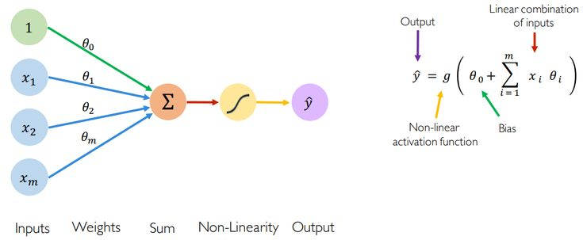

Starting the weekly review
First week review
It’s been three weeks since I started this blog. I was so excited to post about anything and everything … writing about what I learned, what I plan to learn, and sharing my experiences on various topics.
But here I am, paralyzed by the need to make everything “perfect.”
This kind of thinking keeps recurring in my life, stopping me from doing the things I truly want to do. Mostly, it’s because I fear doing it wrong or not having enough to talk about (even though I’ve already written a list of dozens of topics I could write about).
I feel like I don’t know how to start this..
But guess what? I’ll never know unless I give it a shot. A first start, just one tiny step.
So, on the night of March 16th (also the 16th of Ramadan), I decided: “Hey, let’s write the first weekly update.”
I’ve always wanted to have a blog to write about tech and my learning journey.
One of the things I’ve wanted to do most is weekly learning updates — basically, writing about what I did during the week in a nutshell, focusing on the learning aspects, the obstacles I faced, and how I can improve.
I was inspired by various blogs, like Ali Abdaal’s weekly life notes.
So, let’s get started!
Reflecting on the First Quarter Goals
Last week, I reviewed my progress on my first-quarter goals and realized a few things:
-
Lack of Daily Monitoring: Sometimes, I set weekly goals and try to break them into daily tasks, but this wasn’t efficient. I wasn’t tracking my habits, time, or daily accomplishments—especially with the start of Ramadan and the change in schedule. Time just flies by.
So, this week, I started doing daily reviews and writing down the details of my day.
-
Destroying Perfectionism: I need to adopt a “Bad First Draft” mentality. And here we are, doing just that.
-
Slow Progress on ML Course: It’s been months since I started the ML specialization course, but my progress has been super slow due to inconsistency.
What I did: I reintroduced the ML course as a daily habit (20 minutes every day). And guess what? I finally finished the unit I was stuck on!
My mission for this week was: “Keep the Momentum Alive.”
What I Did This Week
1. Neural Networks Deep Dive
I tried to tackle neural networks and get a deeper understanding of them. Last year, I started learning about ML, DL, and LLMs for my Bachelor’s final project, but I realized there were many gaps in my knowledge. This became clear during a college module called “Machine Learning and Neural Networks.”

I read a few articles on backpropagation and NNs:
Along with that, I practiced implementing neural networks.
2. Spirituality and Islam
I took notes on two videos about Ramadan and CHANGE by Ahmed Abd al Monim. They were very useful and served as fuel for the start of the week:
3. Game Design Document
I created a Game Design Document for my college module, “CJRV: Game Development and Virtual Reality.”
It was challenging to think of how to design a game with limited VR aspects, but it was fun diving into this.
It’s literally my beginning in game development.
(PS: Stay tuned for me learning Blender and Unity!)
4. College TPs
Some days this week, I felt super unmotivated to attend college TPs (practical work sessions). I skipped some, not gonna lie, while focusing on others. I’m not sure if this was a good idea, but I was certainly overwhelmed. (To give you context, we have 7 TPs — not trying to make excuses, but yeah, I am.)
5. Energy and Time Management
It was hard to balance my energy this week, especially with sleeping and learning times. Most of the week went into college homework.
6. Data Mining TP
I worked on a Data Mining TP, which was like a mini-research project. We tried to improve the Apriori Algorithm. I mainly used statistical methods and evaluation metrics, which the professor liked. (Phew! He’s a very precise prof.)
7. Group Reading Sessions
I spent a good amount of time this week on group reading sessions for Muqaddimah Ibn Khaldun (مقدّمة ابن خلدون). I was invested on these sessions, though I feel some guilt because they take up more time than I’d like.
8. Weekend Slackiness
I realized that the last two weekends, I’ve been super slacky. But I guess it’s good sometimes to focus only on family during weekends.
9. Reading Al-Naba’ Al-Adheem (النبأ العظيم)
I started reading a book on the greatness of the Quran called Al-Naba’ Al-Adheem. Since this is the month of Ramadan, it’s a great time to listen to Tafseer and learn more about the Quran.
Big Takeaway of the Week
📛 All types of actions carry momentum. It can be good or bad.
Though this week was full of things, I do realize I need more delibrate work specially on the technical aspect .
Comments